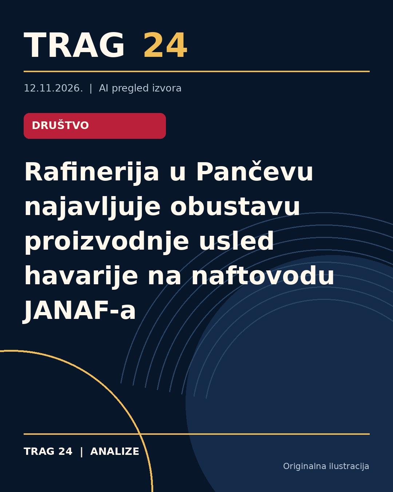

Rafinerija u Pančevu najavljuje obustavu proizvodnje usled havarije na naftovodu JANAF-a

ŠTA SE DOGODILO
Rafinerija nafte u Pančevu smanjila je proizvodnju naftnih derivata i priprema se za potpunu obustavu rada. Ova situacija je posledica prekida transporta sirove nafte naftovodom JANAF, što je izazvano havarijom na delu cevovoda Sisak-Slavonski Brod.
HRONOLOGIJA
Havarija na naftovodu dogodila se 6. novembra, usled čega je došlo do curenja oko 500 hiljada litara sirove nafte. JANAF je tri dana kasnije izvestio da je sva istekla nafta prikupljena i vraćena u sistem putem cisterni. Radovi na sanaciji oštećenja i sanaciji zagađenog područja su u toku, ali nije precizirano koliko će trajati. Prema informacijama dobijenim od Rafinerije, transport sirove nafte neće biti obnovljen pre početka decembra, što direktno utiče na obustavu proizvodnje u Pančevu.
ŠTA NAVODE IZVORI
Sva tri izvora - N1, Danas i Nova.rs - prenose iste nezvanične informacije o smanjenju proizvodnje i pripremama za obustavu u Rafineriji. JANAF je potvrdio curenje nafte i prikupljanje istekle sirove nafte, a radovi na sanaciji su u toku, iako kompanija nije precizirala rokove završetka. Iz Rafinerije i JANAF-a nisu stigli precizni odgovori na pitanja o vremenskom okviru za otklanjanje problema i početak ponovnog transporta sirovine. Takođe, iz NIS-a je navedeno da imaju dovoljno zaliha goriva za sada.
ŠTA JE POTVRĐENO
Potvrđena je havarija na cevovodu kompanije JANAF, prekid transporta sirove nafte od 6. novembra i značajno curenje nafte. Potvrđeno je da je sva istekla nafta sanirana i vraćena u sistem. Rafinerija u Pančevu je smanjila proizvodnju zbog nemogućnosti dopremanja sirovine, a priprema se za obustavu proizvodnje naftnih derivata.
ŠTA NIJE POTVRĐENO
Nije potvrđeno tačno trajanje sanacije havarije na naftovodu. Takođe, nije preciziran tačan datum kada će Rafinerija prekinuti proizvodnju ili kada će transport sirove nafte ponovo biti uspostavljen. Nema zvaničnih potvrda o mogućem uticaju na snabdevanje tržišta i dugoročne posledice obustave proizvodnje.
ŠTA OSTАJE OTVORENO: Ostaje nepoznato kada će sanacija naftovoda biti završena i kada će transport nafte JANAF-om biti obnovljen. Takođe, ostaje da se vidi kako će se dalja situacija odraziti na proizvodnju i snabdevanje derivatima na domaćem tržištu, s obzirom na najavu potpunog prekida proizvodnje u Rafineriji u Pančevu.
Izvori
- https://www.danas.rs/vesti/ekonomija/rafinerija-pancevo-janaf-obustava-proizvodnje/
- https://nova.rs/vesti/biznis/rafinerija-u-pancevu-sprema-se-za-obustavu-proizvodnje-zbog-havarije-na-janaf-u/
- https://n1info.rs/biznis/rafinerija-u-pancevu-sprema-se-za-obustavu-proizvodnje-janaf/
Ova analiza je pripremljena uz pomoć veštačke inteligencije na osnovu javno dostupnih izvora. Navodi izvora nisu nužno nezavisno potvrđeni.